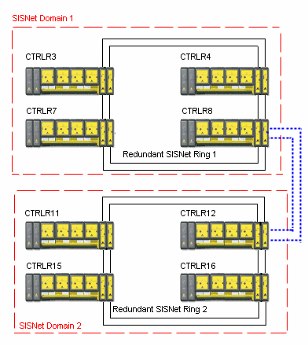

Multiple SLS 1508 SIS Network rings, multiple domains
Another approach is to have multiple SIS Network rings, each of which supports a single SIS Network domain. As in the previous layout, any secure parameter data shared between domains must be configured as System Global data. However as the SISNet Repeaters are not all connected on a single SIS Network ring, SISNet Repeaters on one node in each domain must be connected by a SIS Network bridge (blue dotted line) as shown in the figure.

For example, if a Logic Solver in CTRLR3 is configured as a System Global Publisher publishes a secure parameter that is referenced by a Logic Solver in CTRLR16, the parameter is sent out on SIS Network ring 1. When the parameter gets to CTRLR8, it is forwarded over the SIS Network bridge to CTRLR12 in SIS Network domain 2 (in SIS Network ring 2). The parameter is sent around that ring where it is referenced by the receiving Logic Solver in CTRLR16.
Secure parameters that are system global parameters move only from one SIS Network ring to one other SIS Network ring through one SIS Network bridge. That is, secure parameters received by a SIS Network ring are not forwarded to any other SIS Network rings.
For example, if the layout had a third domain configured on a third SIS Network ring that referenced the secure parameter published by CTRLR3, and SIS Network ring 2 and the third SIS Network ring were connected by a SIS Network bridge, the parameter would not be available in the third domain. The parameter would be available only if there was a SIS Network bridge between SIS Network ring 1 and the SIS Network ring containing the third domain.
The DeltaV Explorer configurations for the two multiple SIS Network domain examples are identical because Explorer contains no information about the physical connections between Logic Solvers and SIS Network domains.